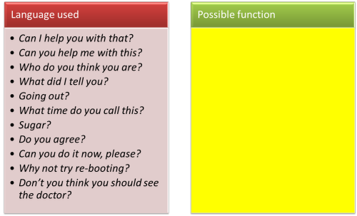

Asking good questions
Asking questions is an important communicative tool and we all
ask lots of them.
In the language classroom, the ability to formulate appropriate
questions is also a key teaching tool.
Question form and question function |
If you have followed the guide to form and function, you'll be
alert to the fact that what looks like a question may not be one and
what looks like a statement may in fact be a question.
Here are some examples. What functions do the utterances perform?
Click on the graphic when you have an answer.

Even here, we may disagree slightly because much depends on tone
of voice, setting, shared knowledge between speaker and hearer and
so on. It is, however, plain to see that form does not always
represent function and vice versa.
Here we are concerned with real questions,
whatever form they take.
 |
Question types |
Consider this list and see if you can come up with some kind of
classification of question types.
Click here when you have done that.
- What's the capital of France?
- How old are you?
- Do you have a brother?
- Where did you go to school?
- How do you make an omelette?
- Why are you sad?
- What's the meaning of 'dirigible'?
- When are you leaving?
- Who did you meet?
- Is this important?
- What's the capital of France?
This is the kind of question a primary school teacher might ask. The answer can come in one word, is right or wrong and known to the questioner. - How old are you?
Again, this is answerable in one word but there's no right or wrong answer and the questioner probably doesn't know the answer. - Do you have a brother?
Another one-word answer – yes or no. The answer may include more information but it doesn't have to. The questioner doesn't know the answer. - Where did you go to school?
This requires a bit more output – probably information about town and country. The questioner doesn't know the answer. - How do you make an omelette?
This requires a lot of output because it's a complicated answer. The questioner may or may not know the answer. - Why are you sad?
Another question requiring considerable output, probably (although less than Question 5). The questioner doesn't know the answer. - What's the meaning of 'dirigible'?
This might require considerable output to explain clearly or only one word (airship). If asked by a teacher, the answer is known. In other circumstances, it isn't. - When are you leaving?
This might require quite a long answer. The questioner doesn't know the answer. - Who did you meet?
This might require quite a long answer. The questioner doesn't know the answer. - Is this important?
This only requires a yes/no answer. If asked by a teacher, the answer is known. In other circumstances, it isn't.
How you classified types of question may differ from the following. It's a place to start.
- closed questions
-
require a simple yes or no. Examples are Questions 3 and 10. - open questions
-

may have one-word answers but are not yes-no questions. Often, they require more output, sometimes lots more. Examples are those beginning with wh- words (1, 2, 4, 5, 6, 7, 8 and 9). Questions using how and why usually require much more from the responder than those using when, which, what, where, whom and who. - display questions
-

are asked so that the learner can display his/her knowledge. Examples are Questions 1, 5 (probably), 7 and 10. - communicative questions
-

are asked when the questioner really does not know the answer. Examples are Questions 2, 3, 4, 6, 8 and 9. - how questions
- Questions with how are usually concerned with manner but
manner of four different sorts and we should know what sort of
response we are looking for:
- an adjectival phrase such as quite excited, a bit
down, unhappy etc. in answer to, e.g:
How did she appear? - an adverbial modifier such as hurriedly, with great
care, in a rush etc. in answer to, e.g.:
How did she do it? - a response, such as from Mary, John explained it, I
looked it up
etc. in answer to, e.g.:
How did she find out?
How do you know that? - a measure of extent or amount such as very, a lot,
extremely, 20 dollars, three miles etc. in answer to,
e.g.:
How long was the jorney?
How much did he worry?
How angry was the boss?
- an adjectival phrase such as quite excited, a bit
down, unhappy etc. in answer to, e.g:
- why questions
- The word why has two possible meanings in terms of the
questioner's intentions and we should be slightly careful when
using it.
- Why meaning How come:
If we ask, for example
Why is John happy?
we are enquiring about causes so the question demands that the learner recalls previous events and states to see connections between those and the present condition of John. That requires that the learner recalls the information, understands it and applies it. That is often quite a challenging question along the lines of, e.g.:
Why does water float on ice?
or
Why does iron become a liquid at 1538 degrees Celsius? - Why meaning What for:
If we ask, for example:
Why did he stop the car?
we are not asking about causes but we are asking about reasons and that requires a different way of processing the data.
Now the learners needs not only to recall the facts of the story. They need to understand them, apply them and analyse them in terms of intentions.
That is cognitively even more demanding.
- Why meaning How come:
 |
Question purposes and uses |
using closed and open questions
Closed questions are the simplest to answer because there are only two possible responses: yes or no. That may lead you to think they are less useful for language teaching but it all depends on purposes.
- Checking
Closed questions are useful for checking concepts and instructions because they are quick to formulate and allow of only two possible answers (one right or one wrong in this case). Here are some examples:
Can I say, "It's a tall ceiling?" Can I say, "It's a high ceiling?" (collocation concept checking)
Are you working alone on this task? (instruction checking)
Is it important to read the first sentence in each paragraph?
Do you have to understand every word? (checking a skills task)
Are you going to write notes? (checking a procedural issue)
Is that the correct past tense of 'make'? (encouraging self-correction)
Warning:
Avoid questions which require the learner to use a presupposition or understand an implication.- If you want to check that the instruction to work in
pairs has been understood, you can ask:
- How are you going to do this?
but that requires a presupposition that the question refers to alone or with a partner and could equally be understood another way (I'm working hard, I'm working in writing etc.)
A better question might, therefore, be: - Who is your partner for this?
because that entails the fact that it is pair work.
- How are you going to do this?
- If you want to check a concept, the same considerations
apply so a question such as:
- What time was his action?
is open to a number of interpretations depending on the learner's understanding of the implication (at 4 o'clock, after his brother came home, when he finished breakfast etc.).
A better question might be: - Does the verb refer to the present or the past?
because only one of these can now be true.
- What time was his action?
- If you want to check that the instruction to work in
pairs has been understood, you can ask:
- Easy questions first

An old salesperson's trick is to ask an easy yes-no question to lull the customer into a sense of security and then follow it up with a question which requires more thought and deliberation as well as commitment. We get, therefore, exchanges such as:
Can I help you? (an offer masquerading as a question)
Yes, please (that's the easy answer)
What kind of hat are you looking for? (now the customer needs to commit)
Teachers can do this, too (and for nicer reasons).
Weaker learners or those that are more reticent can be drawn into an exchange by posing easy yes-no questions first and then encouraged to commit more by follow-up questions so we could get, e.g.:
Are you looking for a particular kind of word? (easy question: the answer is almost certainly yes)
Yes.
Good. What sorts of words do you need to find?
Er. The verbs and nouns.
Great. What sort of verbs?
and so on.
Note that the first wh- question has a limited answer but the second requires much more thought. - From the factual to the personal

The same sort of procedure can be used to encourage a certain amount of investment from learners and move gradually from easy yes-no responses to responses requiring some commitment. For example,
Do many people eat large breakfasts in your country? (a simple yes-no question to which the teacher may even know the answer so there's little pressure on the learner to get it 'right')
Do you have a large breakfast? (another simple yes-no question but requiring personal commitment)
What do you usually have? (now the learner has to deploy the target language and make it personal and memorable)
Why do you say it's your favourite meal of the day? / Why don't you eat much for breakfast? (this requires a bit of thought and some quite complex language use to answer properly)
If you start with the final question, especially with weaker or more reticent learners, you'll get very little response.
using display and communicative questions
Teachers spend a good deal of their professional lives asking
questions to which they already know the answers.
Outside the classroom, in the real or normal world, pointing at
something obvious (like a loudspeaker) and asking:
What's the name
for that?
Can you think of two adjectives to describe it?
would
draw odd looks at the very least and possibly attention from the
authorities.
In a language classroom, however, such questions are quite normal.
Indeed, learners expect them.
display questions
As we saw, these sorts of questions simply give the learner the
opportunity to display knowledge. Sometimes, such questions
really are useless (of which more later) but they do have serious
pedagogical functions as well.
Here's a selection of useful ones (with their ulterior purposes).
 |
Cyclist disappears on country road |
Questions:
Look at the picture and the headline. What's the text
about?
The answer is obvious but the teacher wants explicitly to elicit something like 'a mystery' or 'a disappearance' from the learners:
- To check if they have understood the language in the headline (is, e.g., cyclist understood?)
- To see if they can recognise the formation of the noun from the verb: disappear to disappearance
- To activate what they know about such things happening
- To prepare them for what will follow in the text and allow them to make some predictions about what the text might contain
and one display question has done all that.
 |
Question: Where's the stress? |
Again, it's pretty clear that the teacher is not asking for information, she's asking for production. She clearly knows where the stress should be. So why is she asking?
- To get the learner to produce language so she can check for accuracy
- To get the learner to focus explicitly on stress
- To get the learners (all of them) to notice where the stress falls and decide if that's where they would put it
- To prepare the learners to use the target in a later phase without stumbling over the pronunciation
 |
Questions: What goes in the gap? Can you move the right one? What colour is the right answer? |
Clearly, again, the teacher can just go to the interactive whiteboard and simply move the green box into the gap because she knows the answer. But, wisely, she elicits the correct response because:
- The cognitive effort makes the right form more memorable
- The act of getting up and doing something with the interactive whiteboard makes the solution memorable
- Some people may even find that colour selection helps the memory
- The teacher also wants to know if teaching up to now has been effective. If it has, everyone in the class should get it right. If they don't, it's time to backtrack.
There are thousands of possible display questions so this list stops here. The key fact to note is that they have a purpose and you should know why you are asking them.
communicative questions
These are the ones to which the teacher does not know the answer. They can be open or closed and include things like:
- Is there a music shop in your hometown? (a yes-no factual question)
- What sort of music does it sell? (a wh- factual question)
- Do you enjoy music? (yes-no personal fact question)
- What sorts of music do you like? (a wh- personal fact question)
- Do you think it's OK to download music from the web? (yes-no opinion question)
- What should the penalties be for breaking copyright like this? (a wh- opinion question)
What do you notice about the ordering of the examples above? Click here when you see it.
Starting at the beginning, question 1 is a simple and easy to answer
because it is about external facts and not controversial.
Question 2 requires a bit more data from the learner and is slightly
harder.
Question 3 is harder again because it requires giving personal
information (something that intimidates some students).
Question 4 is slightly harder because it requires both more data and
is personal.
Question 5 puts the learner on the spot because it requires opinion
not personal data and that's scary for many (and culturally
difficult for some).
Question 6 is the hardest of the lot because it not only requires
the student to be vulnerable in expressing personal opinion but it
also requires more data than a yes-no answer and may require
justification.
The moral of the story
It makes sense to grade questions in this order
(although they may not all be relevant) to increase the
challenge gradually and to ease learners in to answering questions of
increasing difficulty. If you start with questions 5 and 6,
don't be surprised if a stunned silence greets you.
The same considerations of challenge apply to display
questions.
Why should you ask communicative questions?
Think for a moment and then click here.
- Real communication
The theory is that using the target language to exchange (note: it's a two-way process) real information not known to the other speaker is both satisfying and memorable. - Simulation
As was said above, in the real world, we do not usually ask questions to which we already know the answer. Using communicative questions in the classroom simulates real-world encounters and prepares people for them. - Motivation
Sharing personal fact and opinion is a basic social function. People enjoy it if they don't feel threatened and that increases commitment and motivation. Engagement, in other words. - Affect and personalisation
People like to be asked about themselves, where they live and their opinions. It values them and that increases engagement. - Authenticity
It has been argued that conversation (which requires the exchange of previously unknown fact and opinion) is the authentic setting in which language is acquired, developed and deployed. We should strive for authenticity in the classroom, too.
 |
Responding to display answers |
There are two main sorts of follow up to learners' display answers:
- Positive endorsement:
Yes, Good, That's right
etc. This simply tells the learner that the response to a display question is exactly what you hoped. Don't overdo it. - Negative outcome:
Not quite
which usually means
Not at all
No, think again
No, can anyone help?
etc. This alerts the learner to what's gone wrong, ideally.
 |
Responding to communicative answers |
A teacher's first instinct is often to praise whatever the
learner says providing the language is acceptable and the
communicative effect is appropriate. That is not always a wise
choice in this case.
On many occasions, the natural follow-up to a response is simply
something like 'Oh' because the hearer has been made aware of
something they didn't know. It is not particularly authentic
to respond to, e.g., "I'm allergic to cats" with either a positive
"Right, good" or a negative "No, that's not right."
The moral is that we should respond primarily to content and only
secondarily to form when people answer communicative questions.
And in that order. So, for example, a better response to "I'm
allergy to cat" might well be:
Oh, are you? That must be difficult sometimes. Are you
allergic to dogs,
too?
Often, stressing the correction when you echo is enough to alert the
learner to what's wrong. You may, of course, have to follow
that up with a focus on form. (It's called a re-cast,
incidentally.)
 |
Avoiding impossible questions |
If a question is asked at the wrong time, and learners aren't
prepared, don't be surprised if they can't answer you.
For example, how would you respond to an opening gambit such as:
Do you think the punishment should fit the crime?
Right. The most common response would be to temporise
with something like:
Well, it depends, I guess. What sort of crimes are you
talking about?
Temporising is a) something that is hard to do in a foreign
language and b) probably not going to carry the lesson forward with
a great deal of momentum.
If you want to ask something to activate what the learners know
about crime and punishment and
introduce the topic,
- What would be a better set of opening questions?
- How do you proceed after them?
- What questions would occur at the end?
Click here when you have answers to those.
- First questions
- should be closed and factual so something like:
Is there a lot of crime in your country / town / city / London? - Second questions
- can be open but should still be factual and non-personal
because it's too early to ask people to take risks. So,
something like:
What sorts of crime are most common?
What sorts of crimes do you read about in the papers?
would be appropriate - The next step
- might well be a bit of task-based learning, getting the
learners to brainstorm all the crimes they know and then order
them by seriousness.
When that's done, you can safely move on to the meat of the lesson and give the learners some lexis, structure and practice in talking about the topic in a controlled way, unthreatened by the need to process complicated thoughts and take risks. - Finally
- You can start to get answers to:
Closed personal factual questions, e.g., Have you ever been the victim of a crime?
Open personal factual questions, e.g., What happened? How did you feel?
Closed opinion questions, e.g., Do you think crime X is more serious than crime Y?
Open, personal opinion questions, e.g., How best can we deal with crime? What sorts of punishments do you think are the most effective?
Ideally, the learners should be asking each other these sorts of questions, of course.
 |
Wait time |
Lastly, don't forget that processing a question and formulating
an answer takes time in a foreign language. The more
elementary you are, the longer it may take. The more cognitive
effort we have to put in, the longer it will take.
As we saw above,
too, there are grades of challenge in questions both in terms of
language and in terms of social pressure.
There is evidence from some research that teachers rarely wait long
enough so curb your desire to move on to the next learner too
quickly or supply the answer yourself. Allowing adequate time
has been shown to increase learner involvement and responsiveness.
There are two sorts of wait time:
- The time you wait after asking the question, allowing the learner(s) to formulate a response
- The time you wait after asking a question and before nominating who should answer it. Again, some research shows that waiting a short time before you nominate someone to respond increases everyone's involvement.
Be prepared to wait.
| Related guides | |
| testing: the essentials | the essential guide to how to use testing in the classroom |
| checking learning | for a related guide to making sure what you teach is what is learned |
| Bloom's taxonomy | this is a way of looking at questions and tasks to measure how difficult they are in terms of cognitive challenge |
There's a test on this – your chance to respond to some questions.
Reference for some of the above:
Thompson, G, 1997, Teaching Teachers to Ask Questions, ELT
Journal 51/2, Oxford: Oxford University Press